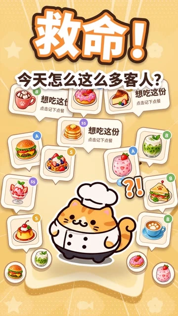

爆单开场
大订单砸进画面，料理徽章跟着弹出。每落一单，服务铃就响一声。
影片暂时无法载入。查看视频文件
STORYBOARD
《后厨爆单！》 · v6 / 13 镜

爆单开场服务铃越响越密，订单从四面八方砸向橘子。展开 13 个镜头收起节奏板大订单砸进画面，料理徽章跟着弹出。每落一单，服务铃就响一声。
镜头从催单的餐桌推向后厨，猫咪来回跑，八个工位同时开火。
四位顾客先后离桌，桌边的订单也跟着消失。
体力条见底，音乐急停。橘子打了个晃，仰面倒下。
六位伙伴接连倒下，红色「体力耗尽！」印章横盖在后厨上方。
画面褪色定格，秒针声托住那句「你倒是安排它们干活啊」。
聚光照亮订单，猫爪按下「想吃这份」。
猫爪连点六桌，六个圆点依次打勾。
橘子起身，六位伙伴跑回工位，进度圈转绿。
六位店员各做一道菜。从小黑萃咖啡，快切到栗子用小火煎芝士肉饼。
两次收款，金色鱼干拖着闪光飞进钱包。钱包一亮，弹出 +632。
霸王顾客拍桌点单。汉堡叠到第 28 片牛肉，橘子又倒了下去。
实机画面缩进小窗，七只猫依次亮相。猫爪点下「进入餐厅」。
INTERACTION & REWARDS
从订单出现到鱼干入账，一单有五个反馈。
可可订单砸下，气泡压扁再弹起。每多一单，服务铃就高一点。
猫爪跟着实机光标移动，前趾按下时，一圈白光从触点扩开。
店长接单后，绿色勾弹到右上角，订单转为「等待厨师继续制作」。
点下收款，十枚小鱼干从触点划出金色弧线，依次落进钱包。
余额从 112,837 涨到 113,469，实机到账的 +632 随即浮起。
PLAY THE GAMES
公开演示版 · 刷新后恢复默认进度